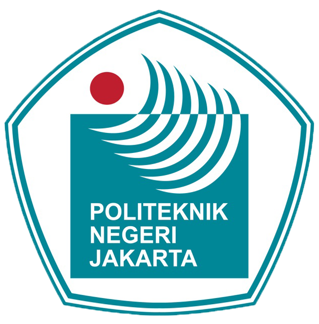

Description
Raw Material Planning & Forecasting at PT Tcpl
Saya memiliki pengalaman dalam pengembangan produk kemasan distribusi untuk produk kosmetik, khususnya pada kemasan kardus dan kemasan sunscreen dari brand Madame Gie. Dalam proses tersebut, saya melakukan perancangan dan evaluasi kemasan dengan mempertimbangkan aspek logistik, efisiensi penyimpanan, serta kemudahan distribusi produk dari gudang hingga ke tahap penjualan. Pekerjaan ini mencakup analisis dimensi dan kapasitas kemasan, mulai dari perhitungan jumlah produk dalam inner box dan master carton, hingga optimalisasi penyusunan kardus pada palet di gudang agar pemanfaatan ruang penyimpanan dan transportasi menjadi lebih efisien. Selain itu, saya juga mempertimbangkan alur distribusi produk dari proses penyimpanan di gudang, pengiriman ke distributor atau retailer, hingga tahap display produk di rak penjualan, sehingga kemasan yang dirancang tidak hanya aman selama proses logistik tetapi juga tetap menarik dan praktis saat ditampilkan di toko. Melalui proses tersebut, saya berfokus pada pengembangan kemasan yang mampu mendukung efisiensi rantai distribusi, perlindungan produk selama pengiriman, serta kemudahan penanganan dalam proses penyimpanan dan penataan produk di retail.
